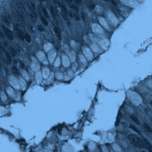
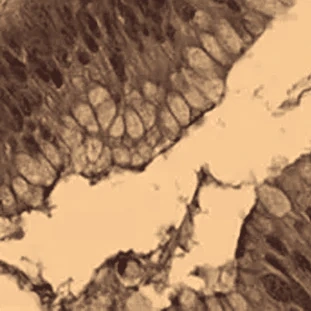
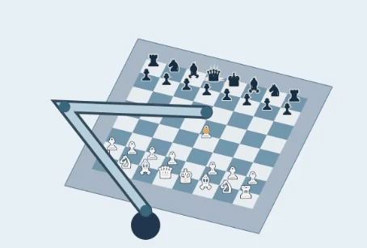

Transaction Support Copilot
A support assistant checks transaction state and links to the relevant playbook entry. It routed 20 of 20 synthetic cases correctly, versus 8 with playbook search alone.
I work on machine learning and computer vision. At Johns Hopkins, I studied how scanning the same tissue on different devices changes what AI models see.



Follow the robot arm as it moves pieces in MuJoCo, then step through the recorded board states.
A support assistant checks transaction state and links to the relevant playbook entry. It routed 20 of 20 synthetic cases correctly, versus 8 with playbook search alone.
Matches receipts by merchant, date, and amount and leaves uncertain cases unassigned. RapidOCR made the expected decision on 20 of 20 synthetic receipts, versus 7 for Moondream.
A Java and Spring Boot service that normalizes two synthetic transaction feeds, stores one decision per transaction in PostgreSQL and supports reprocessing after downstream failures.
A ROS 2 workcell uses ArUco tags to verify chess moves executed in MuJoCo.
Predicts remaining engine cycles from NASA C-MAPSS sensor readings and evaluates error on held-out engines.
An incremental DuckDB pipeline with data-quality checks and a measured BigQuery partition benchmark.
Traces benchmark data to its sources and compares published binning results under a shared evaluation protocol.
Validates industrial telemetry and produces repeatable maintenance summaries in SQLite and BigQuery.
Arduino firmware detects steps and transmits measurements over Bluetooth Low Energy.
Built for the UPC Python course, the project includes a local prototype, a FastAPI multiplayer arena and a reproducible control-point benchmark.
Open the live MuJoCo simulator
Starting position
Computational pathology research at Johns Hopkins University.
How slide scanners affect digital pathology images, model features, and segmentation.
View projectA whole-slide collection for studying variation across scanners and tissue structure.
View projectA model that combines spatial and histopathology features for whole-slide tissue segmentation. Preprint published; manuscript under review at Nature Communications.
View projectSerial histology sections brought together to visualize tissue architecture in three dimensions.
View projectPyTorch · Diffusion models · Foundation-model embeddings · Model evaluation
Image registration · Segmentation · OpenCV · ROS 2 · MuJoCo
Python · SQL · DuckDB · BigQuery · Git · GitHub Actions

I studied electrical and computer engineering at Instituto Superior Técnico and carried out my master’s thesis research at Johns Hopkins University. My projects explore how machine learning performs when the data or the environment changes.